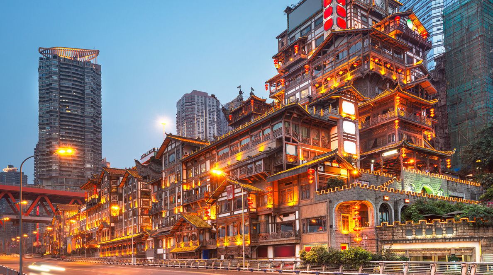
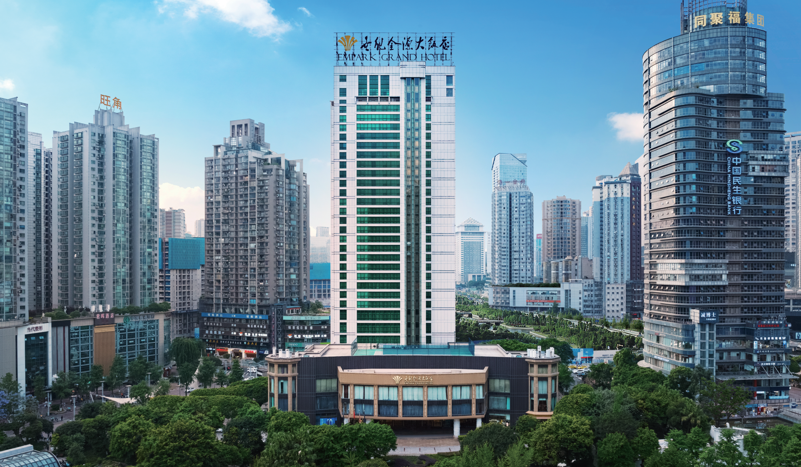
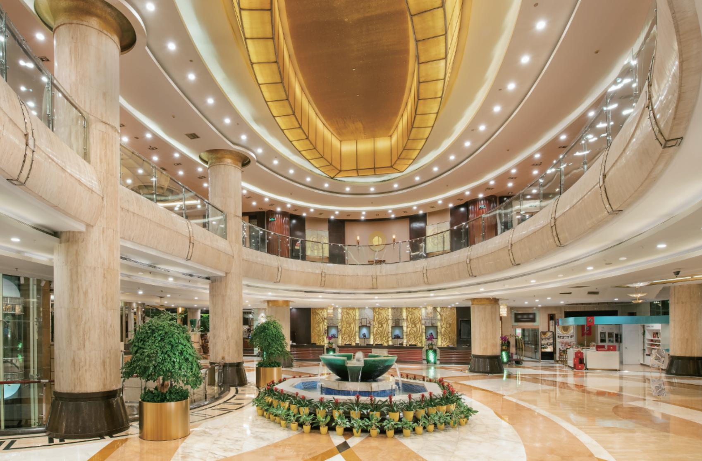
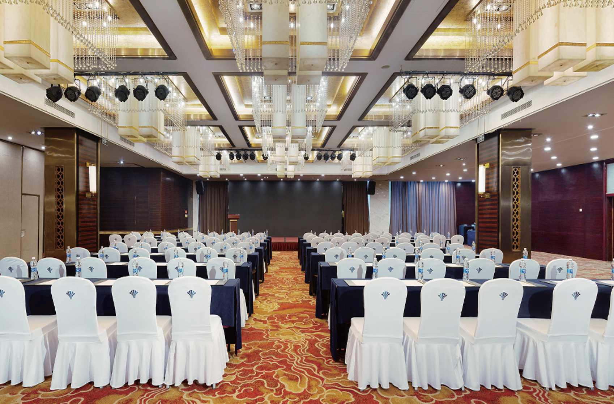
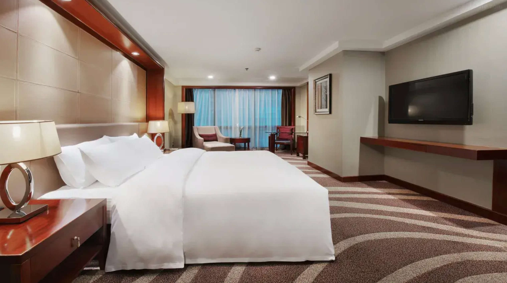
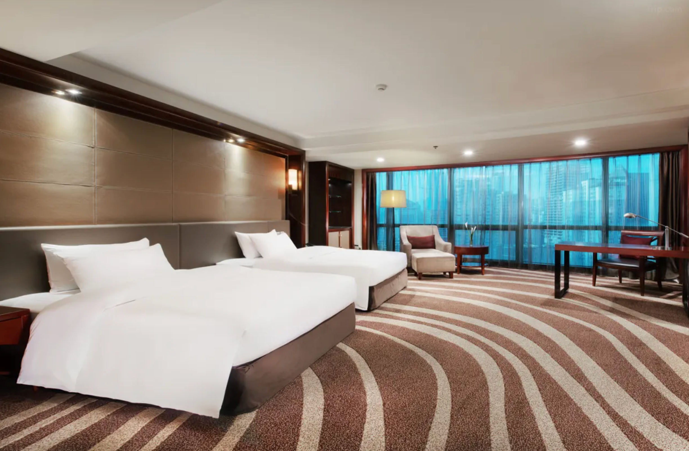

Venue
About Chongqing
Chongqing (重庆; Chóngqìng), (formerly spelled Chungking), is an economically important municipality in West China and is the biggest inland municipality of the country with plans for even more massive growth. The term "Chongqing" can refer to either the city of Chongqing (urban area with a population of approximately 8,518,000) or the Chongqing municipality (much large administrative area including non-city areas and a population of over 30 million).
Chongqing is also the launching point for scenic boat trips down the Yangtze River through the Three Gorges Dam. The Buddhist Dazu Rock Carvings are located three hours west of Chongqing City in the outlying Chongqing Municipality and is listed as an UNESCO World Heritage Site.

Venue
Chongqing Empark Grand Hotel (重庆世纪金源大饭店) (No.1, Second Branch Road, Jianxin North Road)
Chongqing Empark Grand Hotel (重庆世纪金源大饭店) is located in the center of the city and by the garden. It is located in the business circle of Guanyinqiao pedestrian street, the commercial center of Jiangbei District. It is adjacent to the long-distance bus station. You can enjoy the convenience of the business circle when you go out.
The hotel has modern supporting facilities and elegant, chic decor, with a natural, comfortable environment that lets you feel at home. The hotel adopts background music and a public broadcasting system. You can watch international encrypted channels and ordinary domestic satellite TV channels in the guest room. There are also Chinese restaurants, cafeteria, Chongqing old hot pot, Japanese cuisine, wine lounge, tea house, rich food for guests with different tastes. The graceful piano music and its pleasant atmosphere can soothe your body and mind and make you feel relaxed and happy. The hotel is the best choice for your business contacts, family, and friends.
Hotel Website: http://chongqing.emparkgrand-hotel.com/



Accomodation
Chongqing Empark Grand Hotel (重庆世纪金源大饭店) provides exclusive offers to MIND 2026 participants.
● Conference Preferential Price
Superior Single/Twin room (398 RMB, including breakfasts)


● Room Booking
TBD.
Transportation